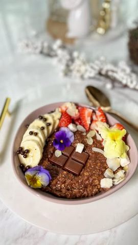

Doručak
Čokoladna ovsena kaša
7. 4. 2023.reel8 sastojaka

Moja beleška
Sačuvano
Ocena
Sastojci
- Za jednu činiju ove kaše potrebno je
- Preko dodati
Priprema
U malenu serpicu sipati mleko, pa na srednjoj vatri ugrejati, dodati ovsene pahuljice, pustiti da se malo ukrčka, smanjiti temperaturu, dodati izgnjecenu bananu, pa kašičicu kakaa , umešati sve lepo i kada je već kasa dobila finu gustinu sipati u činiju pa po želji dodati i preko nje malo voća, kikiriki putera i po koju mrvicu crne čokolade. Nisam koristila ni med ni bilo koji zasladjivač, zaista nema potrebe.. Prijatno 💓
Originalni opis sa Instagrama
Čokoladna ovsena kaša 🌸 Za jednu činiju ove kaše potrebno je: •100 ml biljnog mleka (ja sam koristila kombinaciju kokosovog i bademovog ) •25 gr usitnjenih ovsenih pahuljica •1 banana (ostavite manji deo za preko) •1 kašičica kvalitetnog kakao praha Preko dodati: •malo svežeg voća •malo orašastog plodova (ja najčešće koristim lešnik, badem ili pistać) •kašičicu kikiriki putera •kašičicu crne čokolade u kapljicama U malenu serpicu sipati mleko, pa na srednjoj vatri ugrejati, dodati ovsene pahuljice, pustiti da se malo ukrčka, smanjiti temperaturu, dodati izgnjecenu bananu, pa kašičicu kakaa , umešati sve lepo i kada je već kasa dobila finu gustinu sipati u činiju pa po želji dodati i preko nje malo voća, kikiriki putera i po koju mrvicu crne čokolade. Nisam koristila ni med ni bilo koji zasladjivač, zaista nema potrebe.. Prijatno 💓 • • • #idejezadoručak #idejezaužinu #zdravdorucak #zdavauzina #ovsenakasa #proverenirecepti #ukusnahrana